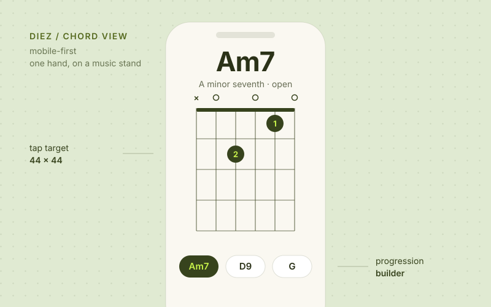

A mobile-aware senior designer who can lead a system, not just ship a screen.
Senior Product Designer with deep cross-platform DS experience. Founded the Silpo Design System covering web and the consumer Flutter app, and currently lead the BOS design system at TemaBit — where mobile patterns are treated as first-class citizens, not desktop afterthoughts.
See selected work → or read about meFour cases where mobile DS thinking made the difference.
From a consumer Flutter app at Ukraine’s top-5 retailer to an indie music product of my own — mobile-first design, cross-platform systems and accessibility from day one.

Silpo Design System — one system, two platforms
Founded the DS without a top-down mandate. Three abstraction levels: patterns (max flexibility), components + patterns (cross-platform), full code-reuse (per-platform). Web shopped Bootstrap-style; Flutter shopped native-feel. One language unified them.

Silpo App — the consumer side of the system
The app that put the DS to the test. Loyalty card, scan-and-shop, store locator and bonuses — all on Flutter, all accessible, all consistent with the web counterpart.

BOS DS — mobile patterns inside an enterprise system
Designed mobile drawer, mobile navigation, mobile empty states and calendar bottom-sheets as first-class DS citizens — not stretched desktop screens. Governance, lifecycle, weekly readiness tracker, Storybook source-of-truth.

Diez — chord-app for guitar players
My own mobile-first product. Chord library, progression builder, monetisation modelling. Practising what I preach: indie product thinking, full ownership, design ↔ engineering.
Three areas where mobile DS thinking shows.
Mobile-aware DS architecture
Touch targets, native pickers, gestures, motion specs — encoded into tokens and components, not bolted on at the end. Three-level abstraction lets one DS travel from web to Flutter.
Cross-platform thinking from day one
I think in shared patterns first, platform deltas second. Material + HIG are starting points, not gospel. Native is the default; custom is a deliberate choice.
Lead role + hands-on delivery
I run cross-team rituals, write ADRs and shape governance — and I still ship pixels. A lead who has not opened Figma this quarter is not a lead I want to be.
Testimonial
“An excellent specialist — balanced, receptive to criticism, and able to argue his position. These are the soft skills a designer actually needs.”
Dana Zhelezniak · Data-driven product designer
Hiring for a mobile-aware senior?
I am open to senior and lead Product Designer roles with a real mobile component — remote, or hybrid in Valencia.